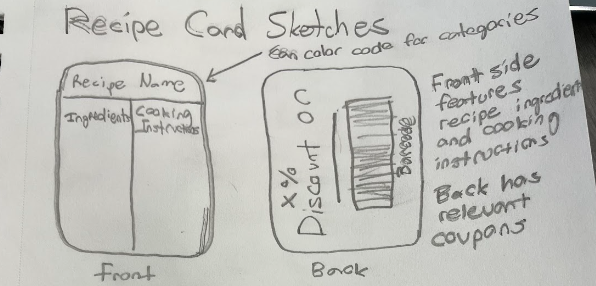
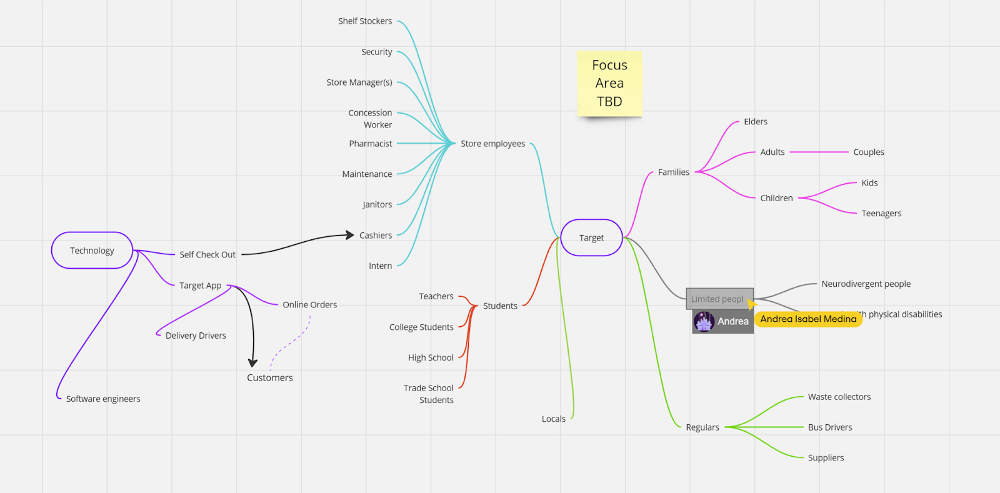
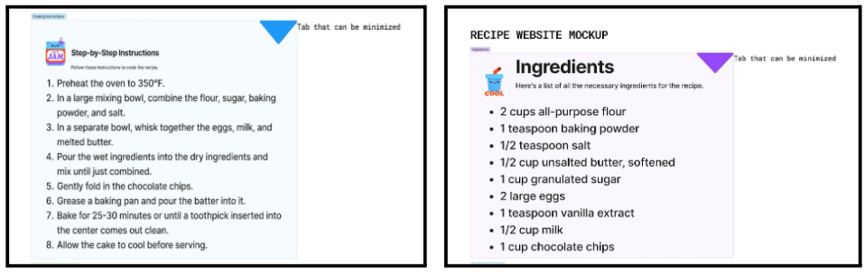
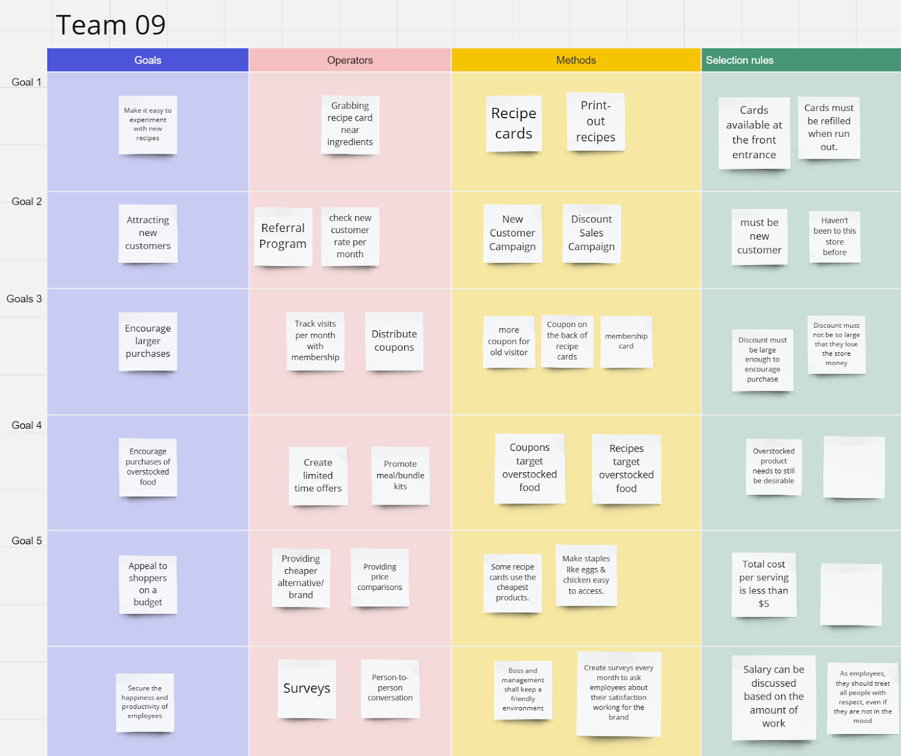
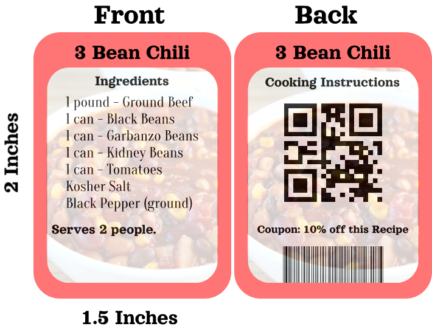
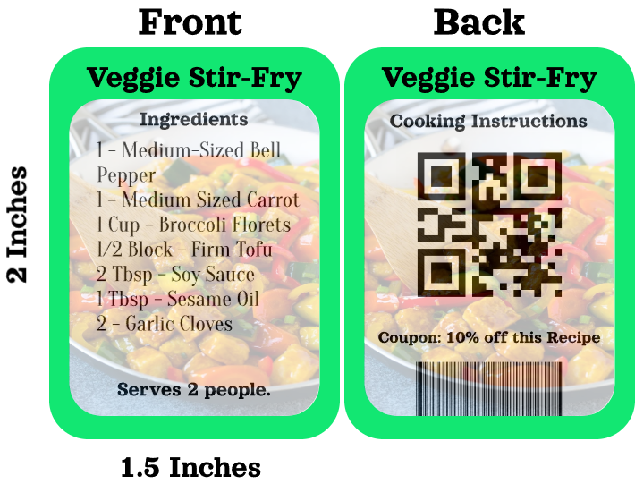
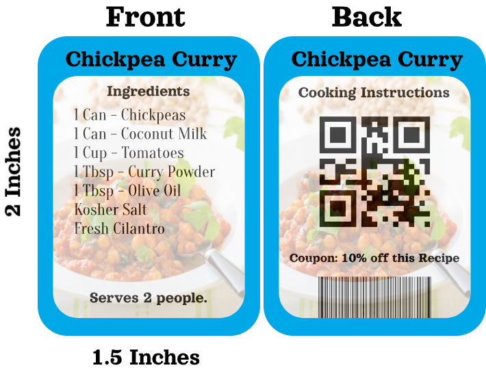
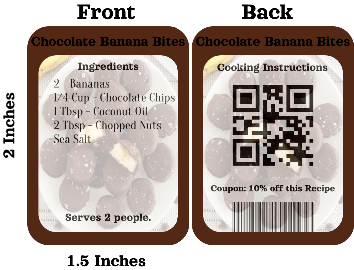

An innovative approach to enhancing in-person grocery shopping by introducing recipe cards.
Grocery shopping has not kept up with the times, especially in-person shopping. Since the pandemic, people have gotten used to ordering food online and need more reason to shop in person. Our goal is to find a way to make in-person shopping for the average consumer a more convenient and enjoyable experience.
The image on the right shows an initial mockup of our recipe card concept. This mockup reflects our goal of intuitively designing and embodying a user-friendly layout that caters to the needs of diverse shoppers.
Group Project Credits: Jiaqi Chen, Lev Working, Zack Wang, Samuel Clouse, Andrea Medina

Through extensive research including sociotechnical system analysis and secondary research, we developed a nuanced understanding of the grocery shopping experience. These insights informed our decision to introduce recipe cards to encourage exploration of new foods and recipes.

Our design space exploration led to the creation of recipe cards designed to fit seamlessly into the shopping experience. Our prototypes include budget-friendly, vegetarian, gluten-free, and dessert recipe options.

To enhance the grocery shopping experience, we analyzed customer actions and streamlined the recipe selection process. This led us to design easily accessible recipe cards, improving overall customer flow and satisfaction.

Our GOMS analysis results informed the creation of recipe cards that simplify the shopping experience, making it more intuitive for customers to discover and try new recipes.
We developed various prototype recipe cards that cater to different dietary needs and preferences, ensuring an inclusive approach to recipe discovery in grocery stores.




Project 2 was an insightful journey into optimizing grocery shopping experiences. Our solution of recipe cards reflects a deep understanding of customer needs and market dynamics.
For a full summary of our project's development, findings, and final solution, refer to our documentation linked below.